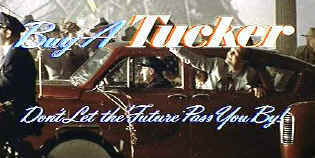

| Tucker:
The Man and His Dream/B,A- |
| Paramount/1988/1110/ANA
2.00 |
Beautifully filmed with loving attention to
detail, Tucker: The Man and His Dream fails in one crucial department: emotional
involvement. The script is rather chilly. It's ironic since Francis Ford Coppola, the director and
chief creative force behind the film, is a passionate filmmaker. Add to this the huge, expansively
good-natured central performance of Jeff Bridges, and the core detachment is
even more puzzling. Perhaps it is the choice of script concept, basing the film on an actual
promotional film made for the Tucker Company. To be sure, it's a clever conceit, but maintaining
the template may place a barrier between the drama and the characters.
Tucker: The Man and His Dream is the mostly true story of Preston
Tucker, forties dreamer, entrepreneur, and the building of the Tucker car and company. In the
course of less than two hours we share the rise and fall of the elegant Tucker vision for a car of
the future. The mechanics of building a car and the mechanics of building a company overpower the
players and even though there are many scenes of the Tucker family, the gleamingly brilliant paint
finishes of the spiffy Tuckers leaves their portrayal in shadows. But this is amazingly evocative
filmmaking of the period, and that alone makes the film a thoroughly enjoyable experience.
 |
| Keeping with the promo film feel.
©Paramount |
"You can't have Falstaff and
have him thin, Mister Tucker," sarcastically intones Bennington, the Wall Street choice to
head the Tucker Company I think the smarmy portrayal of the auto industry bigwigs makes them
more cartoon and less potently evil. The shots at big industry are leveled are too heavy handed.
Still, the look of all those gorgeous Tuckers parading up tot he court house is worth the little
guy/system proselytizing.
Production design is outstanding. From the mural work to the clothing, details
capture the era with uncanny confidence. Dean Tavoularis is production designer and brother Alex
delivers the art direction. The photography of Vittorio Storaro is stunning. Chiaroscuro lighting
alternates with bright brochure images. Camera movement is elegant. However, even though the moody, lighting is wonderful, it's not really in keeping
with Coppola's own blueprint of the promotional film. Some of the family compositions are
positively reflections from Norman Rockwell illustrations. The lively, energetic, Joe Jackson
score completes the package wrapped in vintage elements.
Jeff Bridges gives a performance truly consistent to the Coppola vision,
in fact, much more consistent than the artistic filmmaking choices of the director. But the
brilliance of Coppola is his daring and his obvious love of movies. Supporting the building and
production of Tucker: The Man and His Dream are an excellent group of players, including
Joan Allen as Vera Tucker, Martin Landau as fictionalized composite financier Abe Karatz, Frederic
Forest as mechanic Eddie Dean, and Elias Koteas as design whiz Tremulis.
Except for some unnecessary edge enhancement, it's a
beautiful transfer. Modulated lighting levels filmed by Storaro are replicated with great subtlety.
All the exquisite interior lighting, warm, slightly nostalgic, is preserved on the DVD. I noted
some minor MPEG artifacts in one small patch of blue sky and in fleeting skylight glimpse in the
factory. A few scenes seem slightly cramped and cropped at the 2.0 transfer aspect ratio chosen by
the filmmakers for this DVD. The Dolby Digital sound is very rich and open, and although sounds are
not pinpointed throughout the home theater, overall ambient detail is engrossing.
The heart of the special edition is the audio
commentary by director Francis Ford Coppola. It's not a stretch to realize that Coppola strongly
identifies with Tucker. It comes through any number of times in his comments. Coppola's
observations are friendly and warm. Production design elements and the reason for them are
revealed. Coppola says he sees the whole movie as a contraption. It's a telling comment on the
film. Truly Coppola is a filmmaker that treats his films like personal toys. It's a great strength
and high wire tightrope over pits fills with shards of dried out celluloid.
Coppola laments the style of today's film shooting and cutting, talking
about too many close shots and empty camera angles. In two hours of commentary, there are bound to be repetitions that slip in, for
instance talking about high angled shots or the fact that the Tucker house looks a little bit like
his home in Napa.
Many creative film details are shared. Coppola originally conceived Tucker
as a musical. Bridges actually broke his hand in a scene he
explodes at the car in frustration. The music played by the band at the Tucker debut is a
march written by his father in the forties. There are very few pauses in Coppola's commentary.
"I love movies that are what they are about...that the style and the look of them and the way
they sound and behave is unique to that particular theme. I think that's why a lot of my own work
is different from one piece to another," notes Coppola. It's a pretty good filmmaking
philosophy.
Included in the special edition package is the promotional film on which
the film structure is based. Definitely watch this and get some insight into the brilliance of
Francis Ford Coppola. A ten minute short is comprised of
interviews done with cast and Coppola and executive producer George Lucas filmed in 1988 and brief
scenes from the film.
|
|

Selections from the feature archive include articles on Akira
Kurosawa, Frank Darabont,
Blonde
Bimbos, Hollywood Street Gangs,
or Vietnam:
The Hollywood Pariah, and many more....
Epic Images of Kurosawa

Click on the image above for an original view of Akira Kurosawa's work

Click on the image of The Heistmasters for an interesting feature on the tough guys that
pull off the big jobs.
Vietnam:
The Hollywood Pariah

During World War II, Hollywood pumped out war movies one after the other. Vietnam was was another
story. As far as Hollywood was concerned it was a pariah.

The
Movie Poster Archive include extensive poster images from the films of stars like Susan Hayward,
Kirk Douglas, Katharine Hepburn and many more. Our featured star is Spencer Tracy.

 Gary Morris's insightful publication Bright Lights
Film Journal turns the celluloid in films from a unique perspective. Click on the image above
for more pure movie views. Gary Morris's insightful publication Bright Lights
Film Journal turns the celluloid in films from a unique perspective. Click on the image above
for more pure movie views.

DVD
Demystified makes it all clear.The official Internet DVD FAQ for the rec.video.dvd
Usenet newsgroups.

Reviews of affordable remote controls in the market place. Codes
and tips as well.
 
The Big Combo has
style to spare in reviewing films and producing feature articles. Check out their special
"Lingo" section.

DVDPlanet is the DVD
incarnation of legendary laser retailer Ken Crane's. Deep discounts and serious service.

News, information, features about current films in theaters and in the
pipeline. Easy to use interface.
|